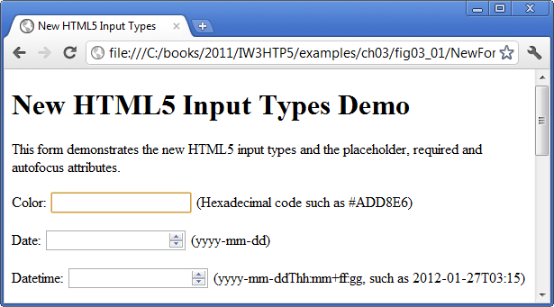

The color input type(Fig. 3.1,lines20–21)enablestheusertoenteracolor.Atthetime ofthiswriting,mostbrowsersrenderthe color input typeasatextfieldinwhichtheuser can enter a hexadecamal code or a color name. In the future, when you click a color input, browsers will likely display a color picker similar to the Microsoft Windows color dialog shown in Fig. 3.2.

The autofocus attribute (Fig. 3.1, line 20)-an optimal attribute that can be used in only one input element on a form-automatically gives the focus to the input element, allowing th user to begin typing in that eklement immediatley. Figure 3.3 shows autofocus on the color element-the first input element in our form-as rendered in Chrome. You do not need to include autofocus in your forms
Traditionally it's been diffcult to validate user input, such as ensuring that an e-mail address, URL, date or time is entered in the proepr format. The new HTML5 input types are self validating on the client side, eliminating the need to add complicated JavaScript codeto your web pages to validate user input, reducing the amount of invalid data submitted and consequently reducting Internet traffic between the server and the client to correct invalid input. The server should still validate all user input.
When a user enters data into a form then submits the form (in this example, bu clicking the Submit button), the browser immediatley checks the self-validating elements to ensure that the data is correct. For example, if a user entes an incorrect hexadeciaml color value when using a browser that renders the color elements as a text field (e.g., Chrome), a callout pointing to the element will appear, indicating that an invalid value was entered (Fig. 3.4). Figure 3.5 lists each of the new HTLM5 input types and provides example of the proper formats required for each type of data to be valid.